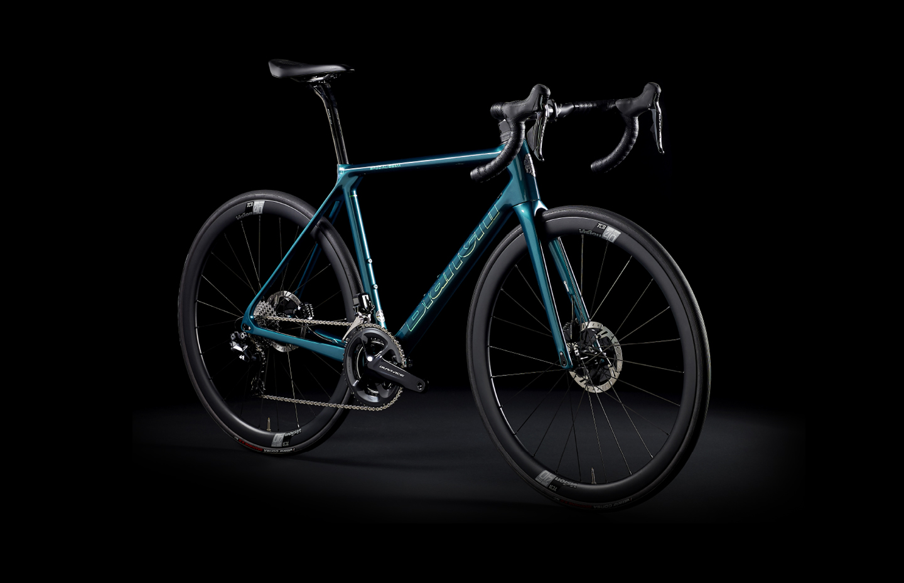
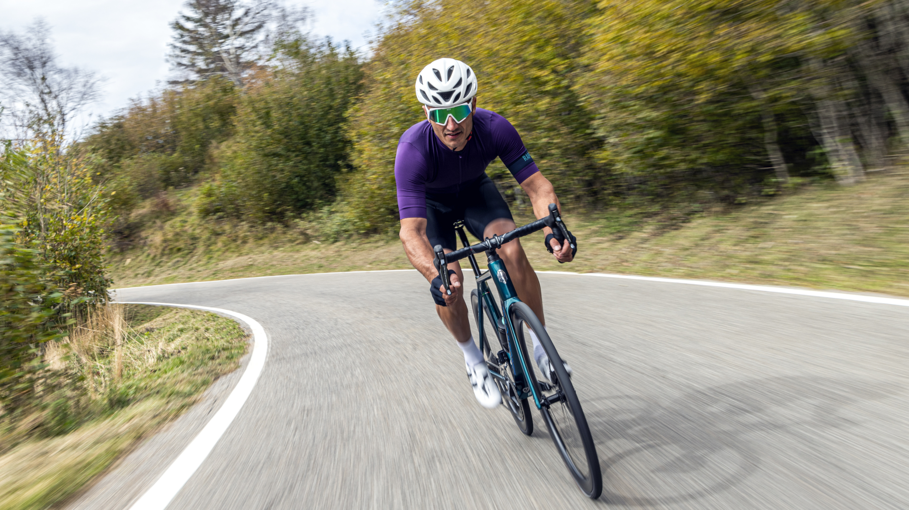
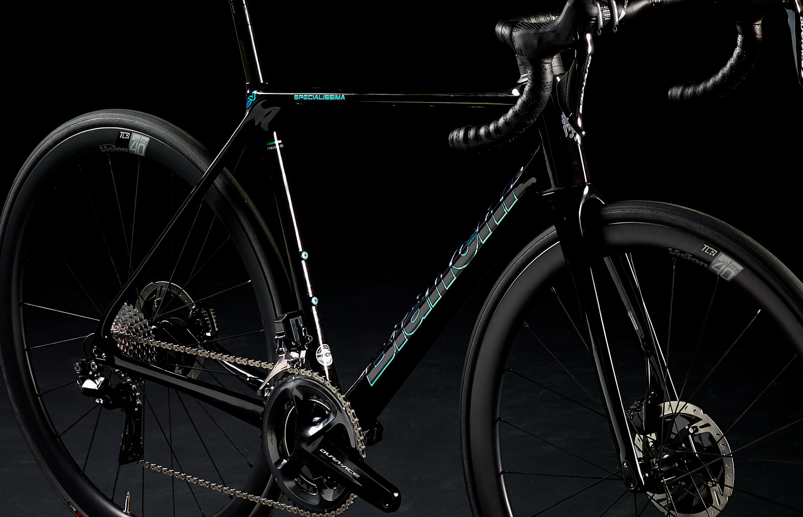

25 OCTOBER 2020
BIANCHI
PRESENTS THE
ALL-NEW
SPECIALISSIMA
RE-ENGINEERED WITH THE ALL-ROUNDER IN MIND, THE NEW SPECIALISSIMA CARBON DISC FRAME COMBINES LIGHTWEIGHT AND SUPERB STIFFNESS

On the heels of one of the most successful World Tour campaigns, Bianchi is proud to introduce its latest
road racing machine: Specialissima.
Totally re-engineered by Bianchi with the all-rounder in mind, the new carbon disc frame weighs just 750g (painted, size 55), but it’s also superbly stiff, providing excellent transfer of power to the road. The new Specialissima is designed for UCI WorldTour professionals to be a complete racing bike. Whether it is to fly up the climbs or to dominate on the flat, the new Specialissima is the solution.
Bearing a name that has become iconic, Specialissima is a new pure racing machine with enhanced climbing, improved stopping power courtesy of disc brakes and smoother aerodynamic performance.
The new all-rounder model designed by Bianchi will be the official bike of both men’s and women’s GreenEDGE WorldTour teams, joining Bianchi’s world-famous aero model Oltre.

ALL-ROUND EXCELLENCE
The Specialissima sits at the top of Bianchi’s road racing all-rounder category, delivering superb climbing panache, with boosted aero-performance and a level of stiffness rarely seen on a bike this light.
The carbon disc frame weighs just 750g and the stiffness to weight ratio is what WorldTour riders love and need. Bianchi CV vibration cancelling system amplifies the ride feel, erasing imperfections and enhancing control when the road goes downhill.
For those aero improvements, Bianchi employed innovations devised for the prolific Oltre aero platform, with better integration (internal cable routing, integrated seatpost and cockpit), sharper lines and aero-shaped tubes, massively enhancing the riding experience.

NEW COLOURWAYS
Bianchi changed not only Specialissima’s technical features but also the looks with cleaner aero lines and fresh colourways.
To continue the Bianchi heritage, Celeste still makes an appearance, but it’s also available in the ultra-light all-black colourway, created especially for the WorldTour with a weight-saving of 80 g. Completing the lineup is a classy new greenish blue option, with hallmark Italian style.

SIGNATURE COLLECTION Specialissima can also be customized thanks to new Bianchi Colour Configurator , which allows customers to select from different combinations and create a unique version. Bianchi has also created a “Signature Collection” for those who value rarity and aesthetic, choosing from five different colourways for the frame and graphics, prepared and selected by Bianchi creative designers to offer exclusive pieces of art. All frames are hand-painted in Italy by Bianchi’s expert artisans and with iridescent and holographic elements.

ALL-ROUNDER / SPECIALISSIMA
26 MARCH 2021
NEW SPECIALISSIMA DELIVERS FIRST WORLD TOUR SUCCESS

25 MARCH 2021
SIMON YATES MAKES A PROMISING START TO SEASON IN TIRRENO-ADRIATICO
DISCOVER MOR
18 FEBRUARY 2021
BIANCHI KICKS OFF 2021 RACING SEASON IN STYLE
DISCOVER MOR